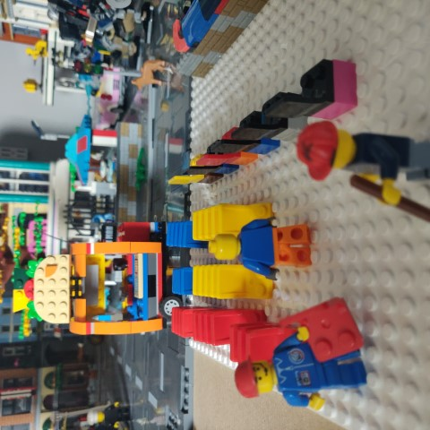
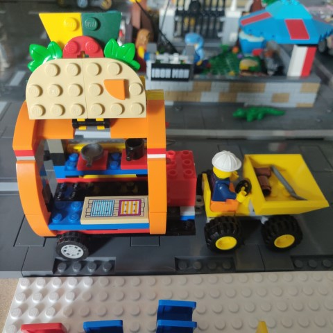
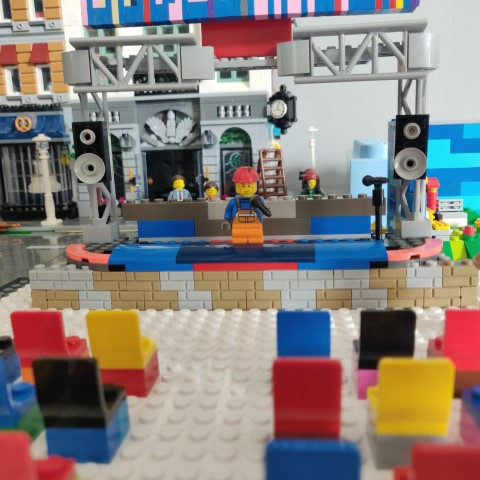

The Secret Stage at Codegarden 2022
You may or may not be aware that Owain (@scottishcoder) is building a Lego Codegarden since he can’t attend the event in person himself.
He has started building the stage, has a mobile Taco bar and a cafe built. He has plans to announce more buildings and stages on the run up to and during Umbraco Codegarden
There are many people who can’t attend Codegarden in person this year so here is an opportunity for you to be in the audience at The Secret Stage.
How can I be part of The Secret Stage*?
You can order a customised minifig from Minifigs.me (other websites are available) and send the minifig of yourself to Owain. He will then add you in to the audience and share photos of the event on this page but also on Twitter using the hashtag #theSecretStage
Discount Code!
Valid until 8th June - get 10% off at checkout : scottishcoder10
A minifig will cost approx £20 depending on how customised you make your minifig - you can make it as customised as you like. The only thing that would be recommended is to maybe get your name printed on it so that you are easily identifiable.
Owain will then keep your minifig safe in DevTown until you meet in real life at a future Umbraco event, where Owain will return the minifig to you.
- Thanks Nik for coming up with the name “The Secret Stage” #h5yr
Just a bit of fun
Owain is not making any money out of this. He is not affiliated with Minifigs.me and not earning any referral points or anything like that. This is just a Lego Fan and an Umbraco Fan bringing the two things he loves together and maybe reducing the FOMO of not attending Codegarden in person this year.
Interested?
You can get in touch with Owain via the following methods:
Email: owaingdwilliams (at) gmail.com
Twitter: @scottishcoder
Who’s going to be there?
I’ll update the Attendees Page
Gallery
Seats being put out at The Secret Stage

The Taco Bar has arrived!

Sound test at The Secret Stage
